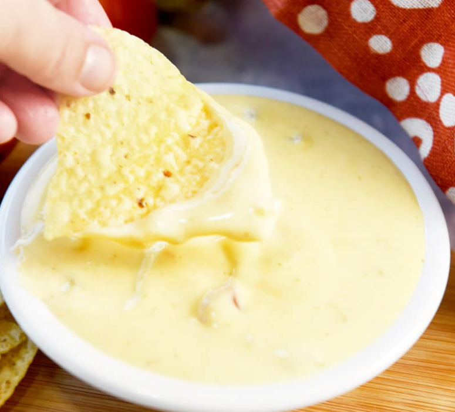

Home
Queso
QUESO RECIPE · RESTAURANT STYLE

This is the best recipe for restaurant style queso ever. We serve this Mexican Cheese Sauce on just about everything from chips to enchiladas and everything in between. If you live in the OKC Oklahoma area then you've probably had a very similar version to this recipe since they serve it at most of the Mexican restaurants in that area.
Prep Time5 mins
Cook Time15 mins
Total Time20 mins
INGREDIENTS
-
12-16 slices American Cheese slices (can use white or yellow)(or to taste. 12 for thinner cheese and 16 for extra creamy)
-
1 cup chicken broth optional: may want extra broth to thin out
-
1 can cream of chicken soup Campbell's is our favorite
-
1 4.5 oz. can chopped green chiles (not jalepenos)
-
1 Roma or small size tomato chopped
-
1/4 cup onions chopped
-
1 to 2 Tsp. cumin (½ Tsp works best, no chili after taste) (more or less to taste- the fresher the cumin the more potent it is so add one tsp. at a time)
INSTRUCTIONS
-
Stovetop instructions: Place a large pot on the stove and turn the heat on medium. Add in the chicken soup first and then add the 1 cup of chicken broth. Stir this mixture around until semi-combined (you don't need to get it smooth just yet and mixture may be clumpy).
-
Add in the cheese, cumin, onions, and green chiles. Cheese will take a while to melt down, but keep stirring the mixture every few minutes so that it doesn't start burning on the bottom of the pot.
-
Once the cheese has melted, around 10 minutes, the mixture should be pretty smooth. Turn the heat down to simmer and add in the tomatoes. Stir to combine.
-
At this point the queso can be moved into the serving vessel or into a crockpot set to warm.
-
I like using a crockpot for a party so that I can have the cheese warm and ready through the whole party.
-
If the queso starts to get a little too thick or if you just want a thinner sauce... use chicken broth to thin it down. Use around 1/4 cup at a time until you get the consistency that you want.